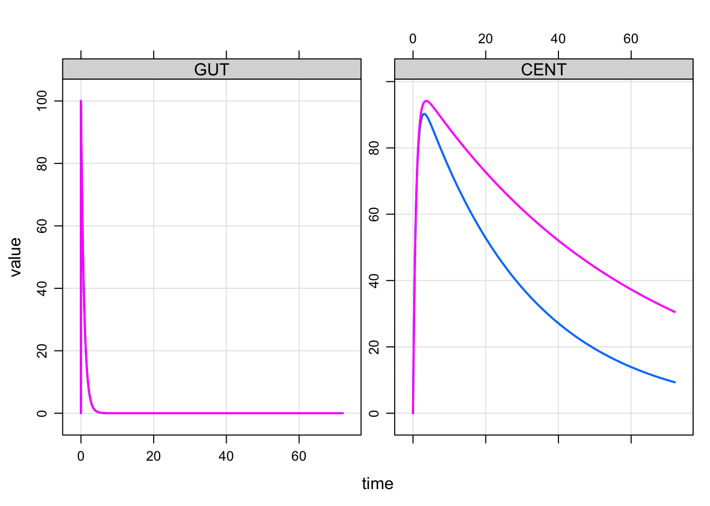

In NONMEM, $MIXTURE will allow you to estimate mixture
models, where individuals are classified in to two or more populations
with a certain probability. It is straightforward to simulate from
models like these in your mrgsolve model code.
Let’s imagine there were two populations in the mixture model, with the second having smaller clearance than the first. In this example, we will develop some code for a simple model and then extend it to implement the mixture model component.
A simple model might be:
library(mrgsolve)
library(dplyr)
code <- '
$PARAM TVCL = 1, V = 30, KA=1.2, POP = 1, THETA1 = 0.5
$PKMODEL cmt="GUT CENT", depot=TRUE
$MAIN
double CL = TVCL;
if(POP==2) CL = TVCL * THETA1;
'In this model, we created a parameter for the population indicator
(POP) and if POP is 2 then clearance is lower
than it would be otherwise.
Compile this model and run
mod <- mcode_cache("A", code) %>% update(end=72, delta=0.1)
idata <- data_frame(POP=c(1,2))
e <- ev(amt=100)
mod %>% mrgsim(idata=idata,events=e) %>% plot
The profile in pink was for POP==2 or the lower
clearance profile and blue was for POP==1.
In the get-started example model, we hard-coded POP as a
parameter and we had to supply the value of POP in the
input data set (in this case, it was via idata).
For the mixture model, we want POP to be simulated and
we want the simulated value to be 1 with a probability of, say, 0.8 and
2 with a probability of 0.2.
To make this happen, we need to simulate a binary variate for each
individual. Random numbers are easy to simulate with
mrgsolve when you use $PLUGIN.
code <- '
$PLUGIN Rcpp
$MAIN
if(NEWIND <=1) {
int POP = 1 + R::rbinom(1,0.2);
}
$CAPTURE POP
'
mod <- mcode_cache("B", code)Here, we invoked the Rcpp plugin that allows us to call
R::binom(1,0.8). R::binom is just like the
regular R version, but it only draws one variate
(n=1).
Let’s test it out
set.seed(222)
out <- mrgsim(mod, nid=10000, end=-1)
head(out). ID time POP
. 1 1 0 2
. 2 2 0 1
. 3 3 0 1
. 4 4 0 1
. 5 5 0 2
. 6 6 0 2Here, we’ve got 20% of the people in the population with
POP of 2:
mean(out$POP==2). [1] 0.1973Now, let’s modify the model again to incorporate our random
POP calculation with the PK model. I have also included a
home-brewed ETA using R::rnorm as another
example and to make the summary a little more interesting.
code <- '
$PLUGIN Rcpp
$PARAM TVCL = 1, V = 30, KA=1.2, THETA1 = 0.5
$PKMODEL cmt="GUT CENT", depot=TRUE
$MAIN
if(NEWIND <=1) {
int POP = 1 + R::rbinom(1,0.2);
double myETA = R::rnorm(0,sqrt(0.09));
}
double CL = TVCL;
if(POP==2) CL = TVCL * THETA1;
double CLi = CL*exp(myETA);
$CAPTURE POP CL CLi
'
mod <- mcode_cache("C", code)And simulate again
set.seed(444)
out <- mrgsim(mod,nid=10000, end=72, events=e,obsonly=TRUE)head(out). ID time GUT CENT POP CL CLi
. 1 1 0 0.0000000 0.00000 1 1 0.7642753
. 2 1 1 30.1194212 68.50511 1 1 0.7642753
. 3 1 2 9.0717953 86.89259 1 1 0.7642753
. 4 1 3 2.7323722 90.25855 1 1 0.7642753
. 5 1 4 0.8229747 89.17134 1 1 0.7642753
. 6 1 5 0.2478752 86.81173 1 1 0.7642753mean(out$CL==0.5). [1] 0.1977out %>%
filter(time==0) %>%
group_by(POP) %>%
summarise(N=n(), Median = median(CLi)). # A tibble: 2 × 3
. POP N Median
. <dbl> <int> <dbl>
. 1 1 8023 1.00
. 2 2 1977 0.499There are probably several ways to simulate three populations. Here
is one way. We’ll drop the PK model for now and focus on generating
POP.
code <- '
$PARAM p1 = 0.33, p2 = 0.6
$PLUGIN Rcpp
$MAIN
if(NEWIND <=1) {
double mixv = R::runif(0,1);
int POP = 1;
if(mixv > p1) POP = 2;
if(mixv > (p1+p2)) POP = 3;
}
$CAPTURE POP mixv
'Here’s what we did
$PARAMmixv) from
uniform(0,1)POP based on the probabilities and
mixv$PLUGIN for this to workNow, let’s compile and test it out
mod <- mcode_cache("D", code)
set.seed(333)
out <- mrgsim(mod, nid=10000, end=-1)head(out). ID time POP mixv
. 1 1 0 2 0.46700066
. 2 2 0 1 0.08459815
. 3 3 0 3 0.97348527
. 4 4 0 2 0.57130558
. 5 5 0 1 0.02011937
. 6 6 0 2 0.72355739And check that the population is properly configured
out %>% as_tibble() %>% count(POP) %>% mutate(p = n/nrow(out)). # A tibble: 3 × 3
. POP n p
. <dbl> <int> <dbl>
. 1 1 3225 0.322
. 2 2 6053 0.605
. 3 3 722 0.0722And we get back the 33% in population 1, 60% in population 2, and the remaining 7% in population 3.
As a final note: remember to call set.seed() prior to
simulating anything random with mrgsovle in order for the
results to be reproducible.
mrgsolve: mrgsolve.github.io | metrum research group: metrumrg.com